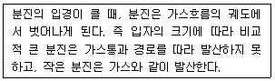
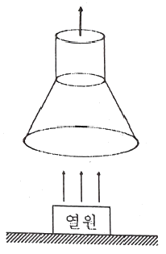
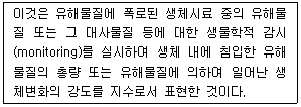
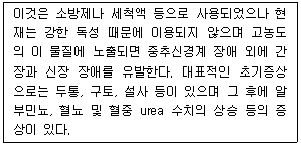

산업위생관리기사 (2021-03-07 기출문제)
1과목: 산업위생학개론
1. 산업재해의 원인을 직접원인(1차원인)과 간접원인(2차원인)으로 구분할 때 직접원인에 대한 설명으로 옳지 않은 것은?
- 불안전한 상태와 불안전한 행위로 나눌 수 있다.
- 근로자의 신체적 원인(두통, 현기증, 만취상태 등)이 있다.
- 근로자의 방심, 태만, 무모한 행위에서 비롯되는 인적 원인이 있다.
- 작업장소의 결함, 보호장구의 결함 등의 물적 원인이 있다.
(정답률: 49%)

2. 작업장에서 누적된 스트레스를 개인차원에서 관리하는 방법에 대한 설명으로 옳지 않은 것은?
- 신체검사를 통하여 스트레스성 질환을 평가한다.
- 자신의 한계와 문제의 징후를 인식하여 해결방안을 도출한다.
- 규칙적인 운동을 삼가하고 흡연, 음주 등을 통해 스트레스를 관리한다.
- 명상, 요가 등의 긴장 이완훈련을 통하여 생리적 휴식상태를 점검한다.
(정답률: 85%)
3. 어느 사업장에서 톨루엔(C6H5CH3)의 농도가 0℃일 때 100ppm이었다. 기압의 변화 없이 기온이 25℃로 올라갈 때 농도는 약 몇 mg/m3인가?
- 325mg/m3
- 346mg/m3
- 365mg/m3
- 376mg/m3
(정답률: 52%)
4. 인체의 항상성(homeostasis) 유지기전의 특성에 해당하지 않는 것은?
- 확산성(diffusion)
- 보상성(compensatory)
- 자가조절성(self-regulatory)
- 되먹이기전(feedback mechanism)
(정답률: 52%)
5. 산업안전보건법령상 밀폐공간작업으로 인한 건강장해의 예방에 있어 다음 각 용어의 정의로 옳지 않은 것은?
- “밀폐공간”이란 산소결핍, 유해가스로 인한 화재, 폭발 등의 위험이 있는 장소이다.
- “산소결핍”이란 공기 중의 산소농도가 16% 미만인 상태를 말한다.
- “적정한 공기”란 산소농도의 범위가 18% 이상 23.5% 미만, 탄산가스 농도가 1.5% 미만, 황화수소의 농도가 10ppm 미만인 수준의 공기를 말한다.
- “유해가스”란 탄산가스·일산화탄소·황화수소 등의 기체로서 인체에 유해한 영향을 미치는 물질을 말한다.
(정답률: 83%)
6. AIHA(American Industrial Hygiene Association)에서 정의하고 있는 산업위생의 범위에 해당하지 않는 것은?
- 근로자의 작업 스트레스를 예측하여 관리하는 기술
- 작업장 내 기계의 품질 향상을 위해 관리하는 기술
- 근로자에게 비능률을 초래하는 작업환경요인을 예측하는 기술
- 지역사회 주민들에게 건강장애를 초래하는 작업환경요인을 평가하는 기술
(정답률: 77%)
7. 하인리히의 사고예방대책의 기본원리 5단계를 순서대로 나타낸 것은?
- 조직 → 사실의 발견 → 분석·평가 → 시정책의 선정 → 시정책의 적용
- 조직 → 분석·평가 → 사실의 발견 → 시정책의 선정 → 시정책의 적용
- 사실의 발견 → 조직 → 분석·평가 → 시정책의 선정 → 시정책의 적용
- 사실의 발견 → 조직 → 시정책의 선정 → 시정책의 적용 → 분석·평가
(정답률: 78%)
8. 혈액을 이용한 생물학적 모니터링의 단점으로 옳지 않은 것은?
- 보관, 처치에 주의를 요한다.
- 시료채취 시 오염되는 경우가 많다.
- 시료채취 시 근로자가 부담을 가질 수 있다.
- 약물동력학적 변이 요인들의 영향을 받는다.
(정답률: 68%)
9. 산업안전보건법령상 위험성평가를 실시하여야 하는 사업장의 사업주가 위험성평가의 결과와 조치사항을 기록할 때 포함되어야 하는 사항으로 볼 수 없는 것은?
- 위험성 결정의 내용
- 위험성평가 대상의 유해·위험요인
- 위험성 평가에 소요된 기간, 예산
- 위험성 결정에 따른 조치의 내용
(정답률: 85%)
10. 단순반복동작 작업으로 손, 손가락 또는 손목의 부적절한 작업방법과 자세 등으로 주로 손목 부위에 주로 발생하는 근골격계질환은?
- 테니스엘보
- 회전근개손상
- 수근관증후군
- 흉곽출구증후군
(정답률: 82%)
11. 작업자의 최대 작업역(maximum area)이란?
- 어깨에서부터 팔을 뻗쳐 도달하는 최대 영역
- 위팔과 아래팔을 상, 하로 이동할 때 닿는 최대 범위
- 상체를 좌, 우로 이동하여 최대한 닿을 수 있는 범위
- 위팔을 상체에 붙인 채 아래팔과 손으로 조작할 수 있는 범위
(정답률: 78%)
12. 미국산업위생학술원(AAIH)에서 정한 산업위생전문가들이 지켜야 할 윤리강령 중 전문가로서의 책임에 해당되지 않는 것은?
- 기업체의 기밀을 누설하지 않는다.
- 전문 분야로서의 산업위생 발전에 기여한다.
- 근로자, 사회 및 전문분야의 이익을 위해 과학적 지식을 공개하고 발표한다.
- 위험요인의 측정, 평가 및 관리에 있어서 외부의 압력에 굴하지 않고 중립적 태도를 취한다.
(정답률: 61%)
13. 턱뼈의 괴사를 유발하여 영국에서 사용 금지된 최초의 물질은?
- 벤지딘(benzidine)
- 청석면(crocidolite)
- 적린(red phosphorus)
- 황린(yellow phosphorus)
(정답률: 56%)
14. 산업안전보건법령상 강렬한 소음작업에 대한 정의로 옳지 않은 것은?
- 90데시벨 이상의 소음이 1일 8시간 이상 발생하는 작업
- 1⑤데시벨 이상의 소음이 1일 1시간 이상 발생하는 작업
- 110데시벨 이상의 소음이 1일 30분 이상 발생하는 작업
- 115데시벨 이상의 소음이 1일 10분 이상 발생하는 작업
(정답률: 71%)
15. 38세 된 남성근로자의 육체적 작업능력(PWC)은 15kcal/min이다. 이 근로자가 1일 8시간 동안 물체를 운반하고 있으며 이때의 작업대사량이 7kcal/min이고, 휴식 시 대사량이 1.2kcal/min일 경우 이 사람이 쉬지 않고 계속하여 일을 할 수 있는 최대 허용시간(Tend)은? (단, logTend=3.720-0.1949E 이다.)
- 7분
- 98분
- 227분
- 3063분
(정답률: 60%)
16. 다음 중 직업병의 발생 원인으로 볼 수 없는 것은?
- 국소 난방
- 과도한 작업량
- 유해물질의 취급
- 불규칙한 작업시간
(정답률: 83%)
17. 온도 25℃, 1기압 하에서 분당 100mL씩 60분 동안 채취한 공기 중에서 벤젠이 3mg 검출되었다면 이 때 검출된 벤젠은 약 몇 ppm인가? (단, 벤젠의 분자량은 78이다.)
- 11
- 15.7
- 111
- 157
(정답률: 48%)
18. 교대 근무제의 효과적인 운영방법으로 옳지 않은 것은?
- 업무효율을 위해 연속근무를 실시한다.
- 근무 교대시간은 근로자의 수면을 방해하지 않도록 정해야 한다.
- 근무시간은 8시간을 주기로 교대하며 야간 근무 시 충분한 휴식을 보장해주어야 한다.
- 교대작업은 피로회복을 위해 역교대 근무 방식보다 전진근무 방식(주간근무→저녁근무→야간근무→주간근무)으로 하는 것이 좋다.
(정답률: 84%)
19. 다음 물질에 관한 생물학적 노출지수를 측정하려 할 때 시료의 채취시기가 다른 하나는?
- 크실렌
- 이황화탄소
- 일산화탄소
- 트리클로로에틸렌
(정답률: 47%)
20. 심한 작업이나 운동 시 호흡조절에 영향을 주는 요인과 거리가 먼 것은?
- 산소
- 수소이온
- 혈중 포도당
- 이산화탄소
(정답률: 44%)
2과목: 작업위생측정 및 평가
21. 어느 작업장에서 소음의 음압수준(dB)을 측정한 결과가 85, 87, 84, 86, 89, 81, 82, 84, 83, 88일 떄, 측정 결과의 중앙값(dB)은?
- 83.5
- 84.0
- 84.5
- 84.9
(정답률: 72%)
22. 직경 25mm 여과지(유효면적 385mm2)를 사용하여 백석면을 채취하여 분석한 결과 단위 시야 당 시료는 3.15개, 공시료는 0.⑤개였을 때 석면의 농도(개/cc)는? (단, 측정시간은 100분, 펌프유량은 2.0L/min, 단위 시야의 면적은 0.00785mm2이다.)
- 0.74
- 0.76
- 0.78
- 0.80
(정답률: 36%)
23. 측정기구와 측정하고자하는 물리적 인자의 연결이 틀린 것은?
- 피토관 - 정압
- 흑구온도 - 복사온도
- 아스만통풍건습계 - 기류
- 가이거뮬러카운터 – 방사능
(정답률: 53%)
24. 양자역학을 응용하여 아주 짧은 파장의 전자기파를 증폭 또는 발진하여 발생시키며, 단일파장이고 위상이 고르며 간섭현상이 일어나기 쉬운 특성이 있는 비전리방사선은?
- X-ray
- Microwave
- Laser
- gamma-ray
(정답률: 56%)
25. 태양광선이 내리쬐지 않는 옥외 장소의 습구흑구온도지수(WBGT)를 산출하는 식은?
- WBGT = 0.7 × 자연습구온도 + 0.3 × 흑구온도
- WBGT = 0.3 × 자연습구온도 + 0.7 × 흑구온도
- WBGT = 0.3 × 자연습구온도 + 0.7 × 건구온도
- WBGT = 0.7 × 자연습구온도 + 0.3 × 건구온도
(정답률: 79%)
26. 일정한 온도조건에서 가스의 부피와 압력이 반비례하는 것과 가장 관계가 있는 법칙은?
- 보일의 법칙
- 샤를의 법칙
- 라울의 법칙
- 게이-루삭의 법칙
(정답률: 70%)
27. 소음의 단위 중 음원에서 발생하는 에너지를 의미하는 음력(sound power)의 단위는?
- dB
- Phon
- W
- Hz
(정답률: 51%)
28. 산업안전보건법령상 유해인자와 단위의 연결이 틀린 것은?
- 소음 - dB
- 흄 – mg/m3
- 석면 – 개/cm3
- 고열 – 습구·흑구온도지수, ℃
(정답률: 45%)
29. 작업장의 기본적인 특성을 파악하는 예비조사의 목적으로 가장 적절한 것은?
- 유사노출그룹 설정
- 노출기준 초과여부 판정
- 작업장과 공정의 특성파악
- 발생되는 유해인자 특성조사
(정답률: 47%)
30. 유기용제 취급 사업장의 메탄올 농도 측정 결과가 100, 89, 94, 99, 120ppm일 때, 이 사업장의 메탄올 농도 기하평균(ppm)은?
- 99.4
- 99.9
- 100.4
- 102.3
(정답률: 62%)
31. 소음의 변동이 심하지 않은 작업장에서 1시간 간격으로 8회 측정한 산술평균의 소음수준이 93.5dB(A)이었을 때, 작업시간이 8시간인 근로자의 하루 소음노출량(Noise dose; %)은? (단, 기준소음노출시간과 수준 및 exchange rate은 OHSA 기준을 준용한다.)
- 104
- 135
- 162
- 234
(정답률: 34%)
32. 흡착제를 이용하여 시료채취를 할 때 영향을 주는 인자에 관한 설명으로 틀린 것은?
- 흡착제의 크기: 입자의 크기가 작을수록 표면적이 증가하여 채취효율이 증가하나 압력강하가 심하다.
- 흡착관의 크기: 흡착관의 크기가 커지면 전체 흡착제의 표면적이 증가하여 채취용량이 증가하므로 파과가 쉽게 발생되지 않는다.
- 습도: 극성 흡착제를 사용할 때 수증기가 흡착되기 때문에 파과가 일어나기 쉽다.
- 온도: 온도가 높을수록 기공활동이 활발하여 흡착능이 증가하나 흡착제의 변형이 일어날 수 있다.
(정답률: 46%)
33. 0.04M HCI이 2% 해리되어 있는 수용액의 pH는?
- 3.1
- 3.3
- 3.5
- 3.7
(정답률: 28%)
34. 표집효율이 90%와 50%의 임핀저(impinger)를 직렬로 연결하여 작업장 내 가스를 포집할 경우 전체 포집효율(%)은?
- 93
- 95
- 97
- 99
(정답률: 60%)
35. 먼지를 크기별 분포로 측정한 결과를 가지고 기하표준편차(GSD)를 계산하고자 할 때 필요한 자료가 아닌 것은?
- 15.9%의 분포를 가진 값
- 18.1%의 분포를 가진 값
- 50.0%의 분포를 가진 값
- 84.1%의 분포를 가진 값
(정답률: 52%)
36. 복사기, 전기기구, 플라즈마 이온방식의 공기청정기 등에서 공통적으로 발생할 수 있는 유해물질로 가장 적절한 것은?
- 오존
- 이산화질소
- 일산화탄소
- 포름알데히드
(정답률: 70%)
37. 벤젠이 배출되는 작업장에서 채취한 시료의 벤젠농도 분석 결과가 3시간 동안 4.5ppm, 2시간 동안 12.8ppm, 1시간 동안 6.8ppm일 때, 이 작업장의 벤젠 TWA(ppm)는?
- 4.5
- 5.7
- 7.4
- 9.8
(정답률: 45%)
38. 산업안전보건법령상 고열 측정 시간과 간격으로 옳은 것은?
- 작업시간 중 노출되는 고열의 평균온도에 해당하는 1시간, 10분 간격
- 작업시간 중 노출되는 고열의 평균온도에 해당하는 1시간, 5분 간격
- 작업시간 중 가장 높은 고열에 노출되는 1시간, 5분 간격
- 작업시간 중 가장 높은 고열에 노출되는 1시간, 10분 간격
(정답률: 54%)
39. 입자상 물질의 여과원리와 가장 거리가 먼 것은?
- 차단
- 확산
- 흡착
- 관성충돌
(정답률: 53%)
40. 산화마그네슘, 망간, 구리 등의 금속 분진을 분석하기 위한 장비로 가장 적절한 것은?
- 자외선/가시광선 분광광도계
- 가스크로마토그래피
- 핵자기공명분광계
- 원자흡광광도계
(정답률: 67%)
3과목: 작업환경관리대책
41. 유해물질의 증기 발생률에 영향을 미치는 요소로 가장 거리가 먼 것은?
- 물질의 비중
- 물질의 사용량
- 물질의 증기압
- 물질의 노출기준
(정답률: 52%)
42. 회전차 외경이 600mm인 원심 송풍기의 풍량은 200m3/min이다. 회전차 외경이 1000mm인 동류(상사구조)의 송풍기가 동일한 회전수로 운전된다면 이 송풍기의 풍량(m3/min)은? (단, 두 경우 모두 표준공기를 취급한다.)
- 333
- 556
- 926
- 2572
(정답률: 43%)
43. 후드의 유입계수가 0.82, 속도압이 50mmH2O일 때 후드의 유입손실(mmH2O)은?
- 22.4
- 24.4
- 26.4
- 28.4
(정답률: 56%)
44. 길이, 폭, 높이가 각각 25m, 10m, 3m인 실내에 시간당 18회의 환기를 하고자 한다. 직경 50cm의 개구부를 통하여 공기를 공급하고자 하면 개구부를 통과하는 공기의 유속(m/s)은?
- 13.7
- 15.3
- 17.2
- 19.1
(정답률: 29%)
45. 입자상 물질 집진기의 집진원리를 설명한 것이다. 아래의 설명에 해당하는 집진원리는?

- 직접차단
- 관성충돌
- 원심력
- 확산
(정답률: 45%)
46. 철재 연마공정에서 생기는 철가루의 비산을 방지하기 위해 가로 50cm, 높이 20cm인 직사각형 후드를 플랜지를 부착하여 바닥면에 설치하고자 할 때, 필요환기량(m3/min)은? (단, 제어풍속은 ACGIH 권고치 기준의 하한으로 설정하며, 제어풍속이 미치는 최대거리는 개구면으로부터 30cm라 가정한다.)
- 112
- 119
- 253
- 238
(정답률: 18%)
47. 다음 중 위생보호구에 대한 설명과 가장 거리가 먼 것은?
- 사용자는 손질방법 및 착용방법을 숙지해야 한다.
- 근로자 스스로 폭로대책으로 사용할 수 있다.
- 규격에 적합한 것을 사용해야 한다.
- 보호구 착용으로 유해물질로부터의 모든 신체적 장해를 막을 수 있다.
(정답률: 75%)
48. 곡간에서 곡률반경비(R/D)가 1.0일 때 압력손실계수 값이 가장 작은 곡관의 종류는?
- 2조각 관
- 3조각 관
- 4조각 관
- 5조각 관
(정답률: 41%)
49. 작업 중 발생하는 먼지에 대한 설명으로 옳지 않은 것은?
- 일반적으로 특별한 유해성이 없는 먼지는 불활성 먼지 또는 공해서 먼지라고 하며, 이러한 먼지에 노출된 경우 일반적으로 폐용량에 이상이 나타나지 않으며, 먼지에 노출될 경우 일반적으로 폐용량에 이상이 나타나지 않으며, 먼지에 대한 폐의 조직반응은 가역적이다.
- 결정형 유리규산(free silica)은 규산의 종류에 따라 Cristobalite, Quartz, Tridymite, Tripoli가 있다.
- 용융규산(fused silica)은 비결정형 규산으로 노출기준은 총먼지로 10mg/m3이다.
- 일반적으로 호흡성 먼지란 종말 모세기관지나 폐포 영역의 가스교환이 이루어지는 영역까지 도달하는 미세먼지를 말한다.
(정답률: 42%)
50. 고열 배출원이 아닌 탱크 위에 한 변이 2m인 정방형 모양의 캐노피형 후드를 3측면이 개방되도록 설치하고자 한다. 제어속도가 0.25m/s, 개구면과 배출원 사이의 높이가 1.0m일 때 필요 송풍량(m3/min)은?
- 2.44
- 146.46
- 249.15
- 435.81
(정답률: 35%)
51. 그림과 같은 형태로 설치하는 후드는?

- 레시바식 캐노피형(Receiving Canopy Hoods)
- 포위식 커버형(Enclosures cover Hoods)
- 부스식 드래프트 챔버형(Boooth Draft Chamber Hoods)
- 외부식 그리드형(Exterior Capturing Grid Hoods)
(정답률: 55%)
52. 산업안전보건법령상 안전인증 방독마스크에 안전인증 표시 외에 추가로 표시되어야할 항목이 아닌 것은?
- 포집효율
- 파과곡선도
- 사용시간 기록카드
- 사용상의 주의사항
(정답률: 43%)
53. 에틸벤젠의 농도가 400ppm인 1000m3체적의 작업장의 환기를 위해 90m3/min 속도로 외부 공기를 유입한다고 할 때, 이 작업장의 에틸벤젠 농도가 노출기준(TLV) 이하로 감소되기 위한 최소소요시간(min)은? (단, 에틸벤젠의 TLV는 100ppm이고 외부유입공기 중 에틸벤젠의 농도는 0ppm이다.)
- 11.8
- 15.4
- 19.2
- 23.6
(정답률: 48%)
54. 덕트에서 공기 흐름의 평균속도압이 25mmH2O였다면 덕트에서의 공기의 반송속도(m/s)는? (단, 공기 밀도는 1.21kg/m3로 동일하다.)
- 10
- 15
- 20
- 25
(정답률: 52%)
55. 강제환기를 실시할 때 환기효과를 제고시킬 수 있는 방법이 아닌 것은?
- 공기배출구와 근로자의 작업위치 사이에 오염원이 위치하지 않도록 하여야 한다.
- 배출구가 창문이나 문 근처에 위치하지 않도록 한다.
- 오염물질 배출구는 가능한 한 오염원으로부터 가까운 곳에 설치하여 점환기 효과를 얻는다.
- 공기가 배출되면서 오염장소를 통과하도록 공기배출구와 유입구의 위치를 선정한다.
(정답률: 63%)
56. 전기집진장치의 장·단점으로 틀린 것은?
- 운전 및 유지비가 많이 든다.
- 고온가스처리가 가능하다.
- 설치 공간이 많이 든다.
- 압력손실이 낮다.
(정답률: 54%)
57. 산업위생관리를 작업환경관리, 작업관리,건강관리로 나눠서 구분할 때, 다음 중 작업환경관리와 가장 거리가 먼 것은?
- 유해 공정의 격리
- 유해 설비의 밀폐화
- 전체환기에 의한 오염물질의 회석 배출
- 보호구 사용에 의한 유해물질의 인체 침입방지
(정답률: 70%)
58. 국소환기시스템의 슬롯(slot) 후드에 설치된 충만실(plenum chamber)에 관한 설명 중 옳지 않은 것은?
- 후드가 크게 되면 충만실의 공기속도 손실도 고려해야 한다.
- 제어속도는 슬롯속도와는 관계가 없어 슬롯속도가 높다고 흡인력을 증가시키지는 않는다.
- 슬롯에서의 병목현상으로 인하여 유체의 에너지가 손실된다.
- 충만실의 목적은 슬롯의 공기유속을 결과적으로 일정하게 상승시키는 것이다.
(정답률: 33%)
59. 귀마개에 관한 설명으로 가장 거리가 먼 것은?
- 휴대가 편하다.
- 고온작업장에서도 불편 없이 사용할 수 있다.
- 근로자들이 착용하였는지 쉽게 확인할 수 있다.
- 제대로 착용하는데 시간이 걸리고 요령을 습득해야 한다.
(정답률: 70%)
60. 덕트 설치시 고려해야할 사항으로 가장 거리가 먼 것은?
- 직경이 다른 덕트를 연결할 때는 경사 30°이내의 테이퍼를 부착한다.
- 곡관의 곡률반경은 최대 덕트 직경의 3.0 이상으로 하며 주로 4.0을 사용한다.
- 송풍기를 연결할 때에는 최소 덕트 직경의 6배 정도는 직선구간으로 한다.
- 가급적 원형덕트를 사용하여 부득이 사각형 덕트를 사용할 경우는 가능한 한 정방형을 사용한다.
(정답률: 46%)
4과목: 물리적유해인자관리
61. 귀마개의 차음평가수(NRR)가 27일 경우 이 귀마개의 차음 효과는 얼마인가? (단, OSHA의 계산방법을 따른다.)
- 6dB
- 8dB
- 10dB
- 12dB
(정답률: 59%)
62. 소음성 난청에 영향을 미치는 요소의 설명으로 옳지 않은 것은?
- 음압 수준 : 높을수록 유해하다.
- 소음의 특성 : 저주파음이 고주파음보다 유해하다.
- 노출시간 : 간헐적 노출이 계속적 노출보다 덜 유해하다.
- 개인의 감수성 : 소음에 노출된 사람이 똑같이 반응하지는 않으며, 감수성이 매우 높은 사람이 극소수 존재한다.
(정답률: 71%)
63. 진동 작업장의 환경관리 대책이나 근로자의 건강보호를 위한 조치로 옳지 않은 것은?
- 발진원과 작업자의 거리를 가능한 멀리한다.
- 작업자의 체온을 낮게 유지시키는 것이 바람직하다.
- 절연패드의 재질로는 코르크, 펠트(felt), 유리섬유 등을 사용한다.
- 진동공구의 무게는 10kg을 넘지 않게 하며 방진장갑 사용을 권장한다.
(정답률: 70%)
64. 한랭환경에 의한 건강장해에 대한 설명으로 옳지 않은 것은?(문제 오류로 가답안 발표시 3번으로 발표되었으나 확정답안 발표시 3, 4번이 정답처리되었습니다. 여기서는 가답안인 3번을 누르면 정답 처리 됩니다.)
- 레이노씨 병과 같은 혈관 이상이 있을 경우에는 증상이 악화된다.
- 제2도 동상은 수포와 함께 광범위한 삼출성 염증이 일어나는 경우를 의미한다.
- 참호족은 지속적인 국소의 영양결핍 때문이며, 한랭에 의한 신경조직의 손상이 발생한다.
- 전신 저체온의 첫 증상은 억제하기 어려운 떨림과 냉(冷)감각이 생기고 심박동이 불규칙하고 느려지며, 맥박은 약해지고 혈압이 낮아진다.
(정답률: 64%)
65. 다음 중 피부에 강한 특이적 홍반작용과 색소침착, 피부암 발생 등의 장해를 모두 일으키는 것은?
- 가시광선
- 적외선
- 마이크로파
- 자외선
(정답률: 69%)
66. 인체에 미치는 영향이 가장 큰 전신진동의 주파수 범위는?
- 2~100Hz
- 140~250Hz
- 275~500HZ
- 4000Hz이상
(정답률: 55%)
67. 음력이 1.2W인 소음원으로부터 35m되는 자유공간 지점에서의 음압수준(dB)은 약 얼마인가?
- 62
- 74
- 79
- 121
(정답률: 51%)
68. 극저주파 방사선(extremely low frequency fields)에 대한 설명으로 옳지 않은 것은?
- 강한 전기장의 발생원은 고전류장비와 같은 높은 전류와 관련이 있으며 강한 자기장의 발생원은 고전압장비와 같은 높은 전하와 관련이 있다.
- 작업장에서 발전, 송전, 전기 사용에 의해 발생되며 이들 경로에 잇는 발전기에서 전력선, 전기설비, 기계, 기구 등도 잠재적인 노출원이다.
- 주파수가 1~3000Hz에 해당되는 것으로 정의되며, 이 범위 중 50~60Hz의 전력선과 관련한 주파수의 범위가 건강과 밀접한 연관이 있다.
- 교류전기는 1초에 60번씩 극성이 바뀌는 60Hz의 저주파를 나타내므로 이에 대한 노출평가, 생물학적 및 인체영향 연구가 많이 이루어져 왔다.
(정답률: 41%)
69. 다음 중 전리방사선의 영향에 대하여 감수성이 가장 큰 인체 내의 기관은?
- 폐
- 혈관
- 근육
- 골수
(정답률: 71%)
70. 1 루멘의 빛이 1ft2의 평면상에 수직방향으로 비칠 때 그 평면의 빛 밝기를 나타내는 것은?
- 1 lux
- 1 candela
- 1 촉광
- 1 foot candle
(정답률: 58%)
71. 인체와 환경 간의 열교환에 관여하는 온열조건 인자로 볼 수 없는 것은?
- 대류
- 증발
- 복사
- 기압
(정답률: 63%)
72. 감압병의 증상에 대한 설명으로 옳지 않은 것은?
- 관절, 심부 근육 및 뼈에 동통이 일어나는 것을 bends라 한다.
- 흉통 및 호흡곤란은 흔하지 않은 특수형 질식이다.
- 산소의 기포가 뼈의 소동맥을 막아서 후유증으로 무균성 골괴사를 일으킨다.
- 마비는 감압증에서 보는 중증 합병증이며 하지의 강직성 마비가 나타나는데 이는 척수나 그 혈관에 기포가 형성되어 일어난다.
(정답률: 38%)
73. 작업환경 조건을 측정하는 기기 중 기류를 측정하는 것이 아닌 것은?
- Kata 온도계
- 풍차풍속계
- 열선풍속계
- Assmann 통풍건습계
(정답률: 51%)
74. 음의 세기(I)와 음압(P) 사이의 관계로 옳은 것은?
- 음의 세기는 음압에 정비례
- 음의 세기는 음압에 반비례
- 음의 세기는 음압의 제곱에 비례
- 음의 세기는 음압의 세제곱에 비례
(정답률: 57%)
75. 고압환경의 인체작용에 있어 2차적인 가압현상에 대한 내용이 아닌 것은?
- 흉곽이 잔기량보다 적은 용량까지 압축되면 폐압박 현상이 나타난다.
- 4기압 이상에서 공기 중의 질소가스는 마취작용을 나타낸다.
- 산소의 분압이 2기압을 넘으면 산소중독증세가 나타난다.
- 이산화탄소는 산소의 독성과 질소의 마취작용을 증강시킨다.
(정답률: 51%)
76. 작업장에 흔히 발생하는 일반 소음의 차음효과(transmission loss)를 위해서 장벽을 설치한다. 이 때 장벽의 단위 표면적당 무게를 2배씩 증가함에 따라 차음효과는 약 얼마씩 증가하는가?
- 2 dB
- 6 dB
- 10 dB
- 16 dB
(정답률: 68%)
77. 산업안전보건법령상 상시 작업을 실시하는 장소에 대한 작업면의 조도 기준으로 옳은 것은?
- 초정밀 작업 : 1000 럭스 이상
- 정밀 작업 : 500 럭스 이상
- 보통 작업 : 150 럭스 이상
- 그 밖의 작업 : 50 럭스 이상
(정답률: 70%)
78. 인간 생체에서 이온화시키는데 필요한 최소에너지를 기준으로 전리방사선과 비전리방사선을 구분한다. 전리방사선과 비전리방사선을 구분하는 에너지의 강도는 약 얼마인가?
- 7eV
- 12eV
- 17eV
- 22eV
(정답률: 73%)
79. 산업안전보건법령상 근로자가 밀폐공간에서 작업을 하는 경우, 사업주가 조치해야할 사항으로 옳지 않은 것은?
- 사업주는 밀폐공간 작업 프로그램을 수립하여 시행하여야 한다.
- 사업주는 사업장 특성 상 환기가 곤란한 경우 방독마스크를 지급하여 착용하도록 하고 환기를 하지 않을 수 있다.
- 사업주는 근로자가 밀폐공간에서 작업을 하는 경우에 그 장소에 근로자를 입장시킬 때와 퇴장시킬 때마다 인원을 점검하여야 한다.
- 사업주는 밀폐공간에는 관계 근로자가 아닌 사람의 출입을 금지하고, 출입금지 표지를 밀폐공간 근처의 보기 쉬운 장소에 게시하여야 한다.
(정답률: 76%)
80. 고온환경에서 심한 육체노동을 할 때 잘 발생하며, 그 기전은 지나친 발한에 의한 탈수와 염분소실로 나타나는 건강장해는?
- 열경련(heat cramps)
- 열피로(heat fatigue)
- 열실신(heat syncope)
- 열발진(heat rashes)
(정답률: 64%)
5과목: 산업독성학
81. 호흡기에 대한 자극작용은 유해물질의 용해도에 따라 구분되는데 다음 중 상기도 점막 자극제에 해당하지 않는 것은?
- 염화수소
- 아황산가스
- 암모니아
- 이산화질소
(정답률: 47%)
82. 납중독에 대한 치료방법의 일환으로 체내에 축적된 납을 배출하도록 하는데 사용되는 것은?
- CaEDTA
- DMPS
- 2-PAM
- Atropin
(정답률: 72%)
83. 다음에서 설명하고 있는 유해물질 관리기준은?

- TLV(threshold limit value)
- BEI(biological exposure indices)
- THP(total health promotion plan)
- STEL(short term exposure limit)
(정답률: 71%)
84. 수치로 나타낸 독성의 크기가 각각 2와 3인 두 물질이 화학적 상호작용에 의해 상대적 독성이 9로 상승하였다면 이러한 상호작용을 무엇이라 하는가?
- 상가작용
- 가승작용
- 상승작용
- 길항작용
(정답률: 62%)
85. 화학물질 및 물리적 인자의 노출기준 상 산화규소 종류와 노출기준이 올바르게 연결된 것은? (단, 노출기준은 TWA기준이다.)
- 결정체 석영 – 0.1mg/m3
- 결정체 트리폴리 – 0.1mg/m3
- 비결정체 규소 – 0.01mg/m3
- 결정체 트리디마이트 – 0.01mg/m3
(정답률: 34%)
86. 노출에 대한 생물학적 모니터링의 단점이 아닌 것은?
- 시료채취의 어려움
- 근로자의 생물학적 차이
- 유기시료의 특이성과 복잡성
- 호흡기를 통한 노출만을 고려
(정답률: 68%)
87. 인체 내 주요 장기 중 화학물질 대사능력이 가장 높은 기관은?
- 폐
- 간장
- 소화기관
- 신장
(정답률: 61%)
88. 중추신경계에 억제 작용이 가장 큰 것은?
- 알칸족
- 알켄족
- 알코올족
- 할로겐족
(정답률: 63%)
89. 망간중독에 대한 설명으로 옳지 않은 것은?
- 금속망간의 직업성 노출은 철강제조 분야에서 많다.
- 망간의 만성중독을 일으키는 것은 2가의 망간화합물이다.
- 치료제는 CaEDTA가 있으며 중독 시 신경이나 뇌세포 손상 회복에 효과가 크다.
- 이산화망간 흄에 급성 폭로되면 열, 오한, 호흡곤란 등의 증상을 특징으로 하는 금속열을 일으킨다.
(정답률: 63%)
90. 다음 단순 에스테르 중 독성이 가장 높은 것은?
- 초산염
- 개미산염
- 부틸산염
- 프로피온산염
(정답률: 52%)
91. 작업장에서 생물학적 모니터링의 결정인자를 선택하는 기준으로 옳지 않은 것은?
- 검체의 채취나 검사과정에서 대상자에게 불편을 주지 않아야 한다.
- 적절한 민감도(sensitivity)를 가진 결정인자이어야 한다.
- 검사에 대한 분석적인 변이나 생물학적 변이가 타당해야 한다.
- 결정인자는 노출된 화학물질로 인해 나타나는 결과가 특이하지 않고 평범해야 한다.
(정답률: 70%)
92. 카드뮴의 만성중독 증상으로 볼 수 없는 것은?
- 폐기능 장해
- 골격계의 장해
- 신장기능 장해
- 시각기능 장해
(정답률: 62%)
93. 인체에 흡수된 납(Pb) 성분이 주로 축적되는 곳은?
- 간
- 뼈
- 신장
- 근육
(정답률: 57%)
94. 작업자의 소변에서 마뇨산이 검출되었다. 이 작업자는 어떤 물질을 취급하였다고 볼 수 있는가?
- 톨루엔
- 에탄올
- 클로로벤젠
- 트리클로로에틸렌
(정답률: 68%)
95. 중금속의 노출 및 독성기전에 대한 설명으로 옳지 않은 것은?
- 작업환경 중 작업자가 흡입하는 금속형태는 흄과 먼지 형태이다.
- 대부분의 금속이 배설되는 가장 중요한 경로는 신장이다.
- 크롬은 6가크롬보다 3가크롬이 체내흡수가 많이 된다.
- 납에 노출될 수 있는 업종은 축전지 제조, 합금업체, 전자산업 등이다.
(정답률: 71%)
96. 약품 정제를 하기 위한 추출제 등에 이용되는 물질로 간장, 신장의 암발생에 주로 영향을 미치는 것은?
- 크롬
- 벤젠
- 유리규산
- 클로로포름
(정답률: 52%)
97. 다음 중 악성 중피종(mesothelioma)을 유발시키는 대표적인 인자는?
- 석면
- 주석
- 아연
- 크롬
(정답률: 67%)
98. 유리규산(석영) 분진에 의한 규폐성 결정과 폐포벽 파괴 등 망상 내피계 반응은 분진입자의 크기가 얼마일 때 자주 일어나는가?
- 0.1~0.5㎛
- 2~5㎛
- 10~15㎛
- 15~20㎛
(정답률: 42%)
99. 입자상 물질의 호흡기계 침착기전 중 길이가 긴 입자가 호흡기계로 들어오면 그 입자의 가장자리가 기도의 표면을 스치게 됨으로써 침착하는 현상은?
- 충돌
- 침전
- 차단
- 확산
(정답률: 52%)
100. 다음에서 설명하는 물질은?

- 납
- 수은
- 황화수은
- 사염화탄소
(정답률: 59%)
근로자의 신체적 원인은 간접적으로 작업장 안전에 영향을 미칠 수 있지만, 직접적인 원인은 아니다. 따라서 정답은 "근로자의 신체적 원인(두통, 현기증, 만취상태 등)이 있다."가 된다.
간단명료한 설명: 직접원인은 불안전한 상태와 불안전한 행위, 간접원인은 인적 원인과 물적 원인으로 구분된다. 근로자의 신체적 원인은 인적 원인에 해당하며, 직접적인 원인은 아니다.